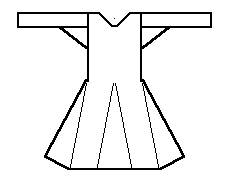

According to the typology given in Nockert, Type 1 Tunics are typified as
"A garment comprising a main piece forming the back and front, i.e. without shoulder seams. Side gores inserted between the main pieces, from the lower edge top hip level. Gores inserted to the same height in the middle of the front and back of the main piece. Neck slits can occur, as well as straight sleeve openings. Long sleeves, tapering downwards, with no suggestion of rounding and cut straight at the bottom. Gores under the sleeves."
There are three examples of this type of tunic; the Kragelund tunic, the Skjoldehamn tunic, the Bocksten tunic, the "Vinkager tunic", the other , "Vinkager tunic", and the "Lyoo"
Go to Tunic Page or Proceed
Some Clothing of the Middle Ages -- Tunics -- Type 1, by I. Marc Carlson, Copyright 1996, 1997. This code is given for the free exchange of information, provided the Author's Name is included in all future revisions, and no money change hands-